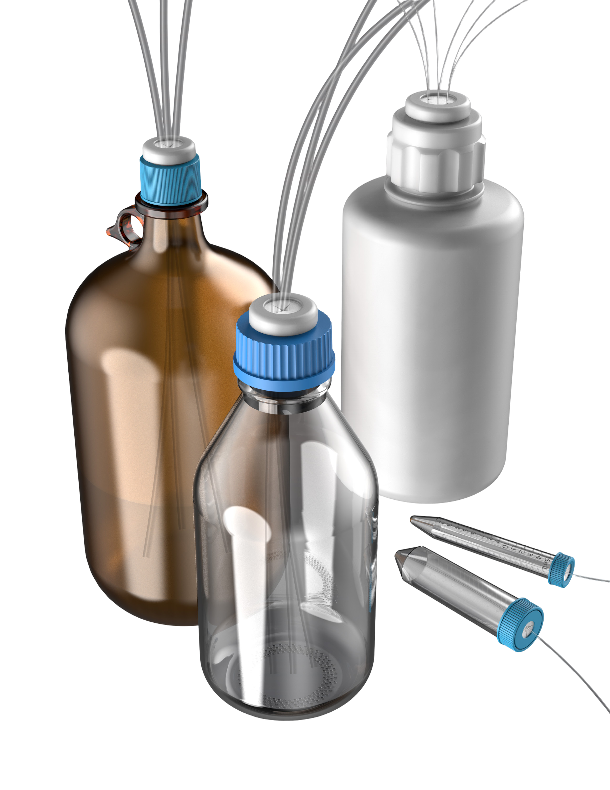

A quick, easy way to secure tubing while reducing contamination and evaporation — a self-sealing septum instead of a ported cap you screw in every time, or a wrap of stretchy film.

Traditional methods for securing tubing in a bottle mean screwing in a ported cap each time, or wrapping everything in stretchy film — an approach that is inconsistent, leaves gaps particularly once tubes are added or removed, and can let bits of film fall into the bottle along with other airborne contaminants.
SeptaCaps replaces both with a self-sealing septum that holds tubing or sampling needles in place without cap adjustments or makeshift wraps.
Push the tube through the septum. No cap adjustment, no re-wrap when a line is added or pulled.
The septum closes around what passes through it, so the headspace stays sealed between interventions.
EPDM septa in a threaded cap built to go back on the same bottle, run after run.
Send us the bottle make and a caliper reading across the thread and we will name the cap.
Falcon® and generic profiles only exist on the centrifuge lines, and the bottle caps only come cross-cut or multi-cut. Clear a filter, or ask us about the fit.
The GL45 SeptaCap is also listed as compatible with Corning® Easy Grip and Nalgene™ Rapid-Flow 45 mm bottles. Three separate 38 mm families — Wako®/Cubitainer®, 38-430 glass and 38-430 plastic — all measure 36.8–37.5 mm across, and the two 48 mm threads both measure 45–46 mm, so read the bottle, not the caliper alone.
See the 48 mm Corning® page →The centrifuge lines ship either way — a vial with a SeptaCap fitted, or a replacement cap for vials you already own.
Centrifuge caps come in a Falcon® profile and a generic profile — the F in the part number marks the Falcon® version.
All centrifuge vial and cap assemblies ship non-sterile.
Make, model and a caliper reading across the thread is usually enough. We answer within one business day.